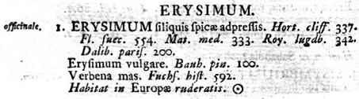
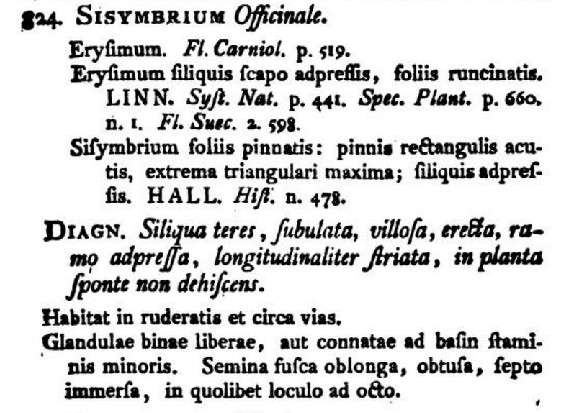
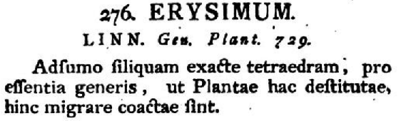

SISYMBRIUM officinale (L.) Scop.
Herbe aux chantres, sisymbre officinal, vélar officinal
Dans l'Yonne
- Très commune.
- Mode de vie : annuel.
- Période de floraison approximative :
Mai-Juin-Juillet-Août.
- Habitat : Décombres, talus, bord des chemins.
- Tailles :
 10 à 80 cm 10 à 80 cm
 ± 3 mm maximum. ± 3 mm maximum.
Origine supposée des noms
- générique : un nom de plante employé dans l'Antiquité romaine et se rapportant alors soit au cresson de fontaine, soit à la menthe sauvage, repris du grec σισυμβριον (sisymbrion).
- spécifique : considéré comme ayant des propriétés médicinales, notamment au niveau des cordes vocales, d'où son nom d'herbe aux chantres en français.
Une parenthèse nomenclaturale
- Linné attribuait parfois des noms de plantes à la va-vite. Ce fut le cas avec ce Sisymbrium qu’il avait nommé Erysimum officinale
 Mais Scopoli (1723-1788), très attentif aux caractères morphologiques de cette plante, s’en est aperçu et, en 1772, il publie une diagnose précise pour changer le classement de Linné dans son ouvrage intitulé Flora carniolica; exhibens plantas Carnioliæ indigenas et distribvtas in classes, genera, species, varietates ordine linnaeano : tout en assumant pleinement ce changement de nom puisque, pour ce faire, il a suivi la méthode de Linné : Ceci nous permet de comprendre pourquoi le nom de Sisymbrium officinale est suivi de (L.) et pourquoi ce (L.) nous indique que le nom initial de Linné (Erysimum officinale) est un basionyme. Le nom attribué par Scopoli est dit comb. nov..
Mais nous sommes désormais au XXIe siècle et les classifications actuelles utilisent des outils moléculaires pour étudier, non plus des caractères morphologiques, mais des milliers de caractères génétiques.
Détails caractéristiques
- Sa tige dressée et ramifiée portant de petites grappes (racèmes) de fleurs jaunes au bout de ses ramifications supérieures qui sont allongées et souvent horizontales.
 Ramifications - György Ligeti: Paradigms Ramifications - György Ligeti: Paradigms
- La forme de ses feuilles alternes divisées en lobes dont le terminal est plus grand que les autres et présente deux oreillettes.
- Ses fleurs jaunes ont 4 sépales libres et 4 pétales libres disposés en croix.
- Leurs grains de pollen sont de taille moyenne et leur pollinisation est soit entomophile (par les insectes) et donc allogame (pollinisation croisée) ou cléistogame (si les fleurs restent closes), c'est-à-dire par autogamie.
- Ses siliques sont appliquées contre la tige.
- Ses graines minuscules et de formes irrégulières sont dispersées par le vent.
Nombre d'espèces icaunaises dans le genre
- SISYMBRIUM : 2, puisque le vélaret,
Sisymbrium irio, ci-dessous, n'aurait pas été vu dans l'Yonne depuis 1947 :
|


{kind=link}
{kind=link}
{kind=link}